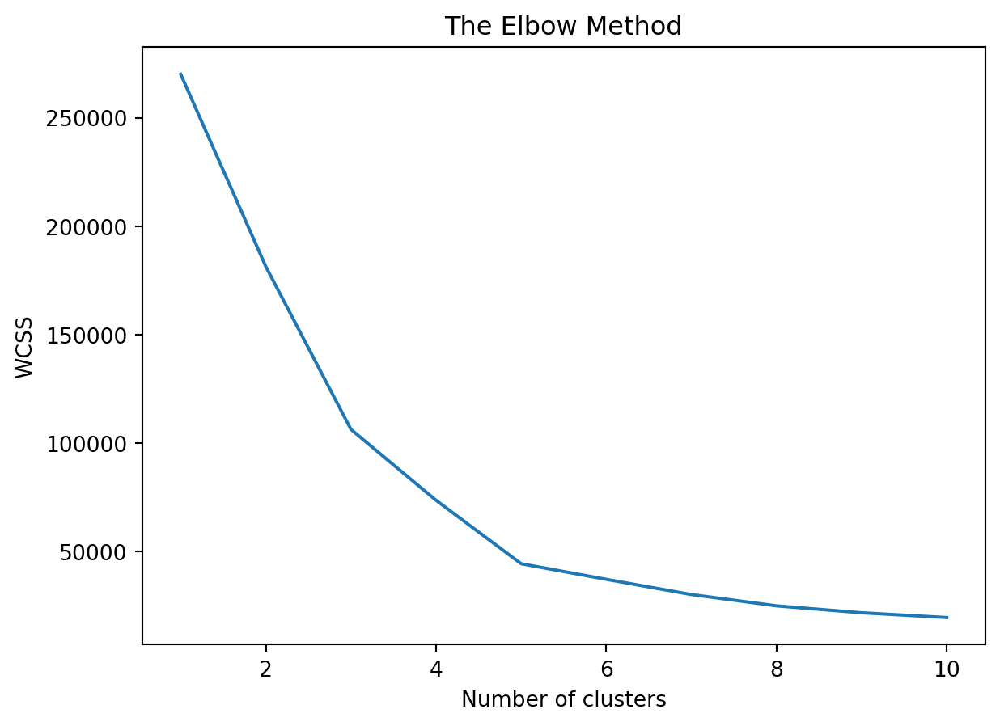
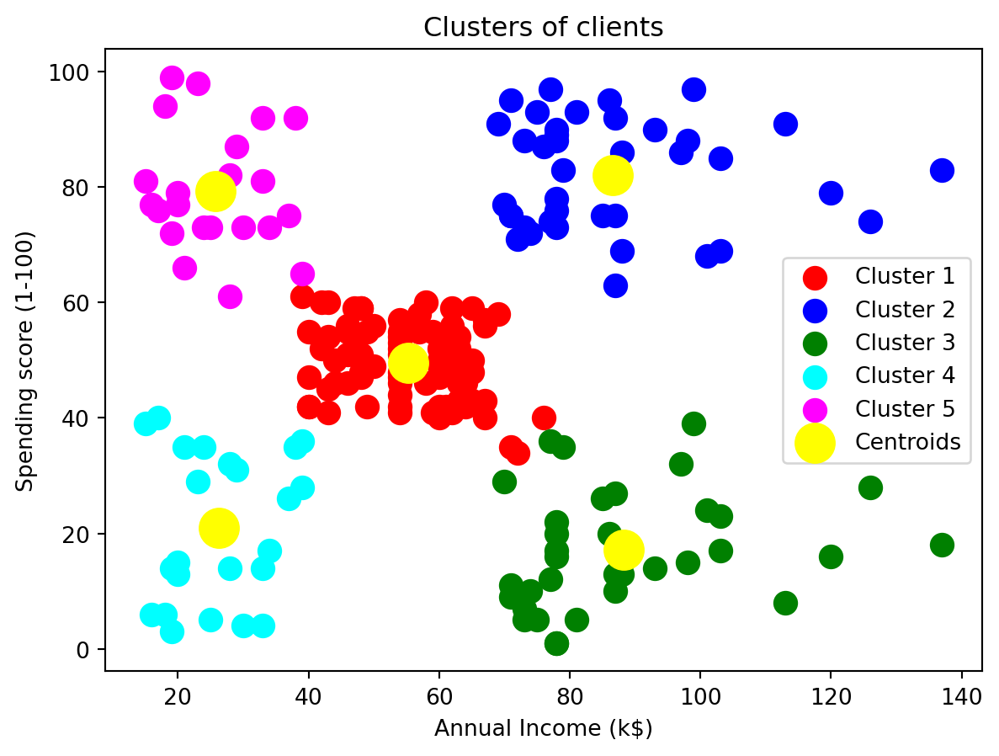

import numpy as np
import matplotlib.pyplot as plt
import pandas as pd#Introduction
Clustering is a concept in data analysis and machine learning that involves grouping similar items or data points together based on certain features or characteristics.
In the world of data analysis, clustering algorithms perform a similar task. They group data points together based on certain features or characteristics, and the goal is to create meaningful clusters that help us understand patterns in the data.
##K-means clustering
In K-means clustering for data, the data points are like books, and the algorithm iteratively assigns them to clusters based on their similarity to the “centroid” (center) of each cluster. The goal is to minimize the total distance of all data points to the centroids within their respective clusters.
K-means clustering is widely used in various fields, such as customer segmentation in marketing, image compression, and even in some machine learning applications where grouping similar data points is essential.
dataset = pd.read_csv('Mall_Customers.csv')
X = dataset.iloc[:,[3,4]].valuesThe dataset is read from a CSV file, and only the relevant features (Annual Income and Spending Score) are extracted into the variable X
# Using the elbow method to find the optimal number of clusters
from sklearn.cluster import KMeans
wcss =[]
for i in range (1,11):
kmeans = KMeans(n_clusters = i, init = 'k-means++', max_iter =300, n_init = 10, random_state = 0)
kmeans.fit(X)
wcss.append(kmeans.inertia_)The code uses the Elbow Method to determine the optimal number of clusters (K) by fitting the K-means algorithm with different values of K and calculating the within-cluster sum of squares (WCSS). The WCSS values are then plotted.
A plot is generated to visualize the Elbow Method. The optimal number of clusters is typically where the WCSS starts to decrease at a slower rate, resembling an “elbow” in the graph.
# Plot the graph to visualize the Elbow Method to find the optimal number of cluster
plt.plot(range(1,11),wcss)
plt.title('The Elbow Method')
plt.xlabel('Number of clusters')
plt.ylabel('WCSS')
plt.show()
Based on the Elbow Method analysis, the algorithm is applied with the optimal number of clusters (in this case, 5). The cluster assignments are stored in Y_Kmeans.
kmeans=KMeans(n_clusters= 5, init = 'k-means++', max_iter = 300, n_init = 10, random_state = 0)
Y_Kmeans = kmeans.fit_predict(X)The code visualizes the clusters by creating a scatter plot. Each cluster is represented by a different color, and the centroids are marked in yellow.
# Visualising the clusters
plt.scatter(X[Y_Kmeans == 0, 0], X[Y_Kmeans == 0,1],s = 100, c='red', label = 'Cluster 1')
plt.scatter(X[Y_Kmeans == 1, 0], X[Y_Kmeans == 1,1],s = 100, c='blue', label = 'Cluster 2')
plt.scatter(X[Y_Kmeans == 2, 0], X[Y_Kmeans == 2,1],s = 100, c='green', label = 'Cluster 3')
plt.scatter(X[Y_Kmeans == 3, 0], X[Y_Kmeans == 3,1],s = 100, c='cyan', label = 'Cluster 4')
plt.scatter(X[Y_Kmeans == 4, 0], X[Y_Kmeans == 4,1],s = 100, c='magenta', label = 'Cluster 5')
plt.scatter(kmeans.cluster_centers_[:,0], kmeans.cluster_centers_[:,1], s = 300, c = 'yellow', label = 'Centroids')
plt.title('Clusters of clients')
plt.xlabel('Annual Income (k$)')
plt.ylabel('Spending score (1-100)')
plt.legend()
plt.show()
#Conclusion
This code segment appears to perform K-means clustering on a dataset of Mall Customers, particularly focusing on the features “Annual Income” and “Spending Score.”
Conclusion:
The Elbow Method suggests that 5 clusters are appropriate for this dataset. The scatter plot visually represents the clusters of mall customers based on their Annual Income and Spending Score. The yellow points represent the centroids of each cluster. In summary, this code performs K-means clustering on mall customer data, determines the optimal number of clusters using the Elbow Method, and visually presents the resulting clusters and centroids. The analysis can provide insights into customer segmentation based on income and spending behavior.